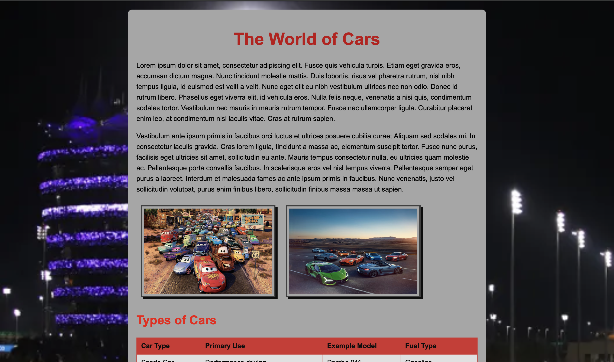

Assignments
Assignment 1 - Basic HTML

This assignment introduces the basics of HTML, focusing on creating a simple webpage structure.
Assignment 2 - Basic CSS
This assignment covers the fundamentals of CSS, including styling text, layout, and responsive design.
Assignment 3 - Page Layout

This assignment focuses on creating a responsive page layout using CSS Flexbox and Grid.
Assignment 4 - Recreate CSS Page
This assignment challenges on recreating one of USC's webpage layout using HTML and CSS.
Assignment 5 - JavaScript Buttons & etc
This assignment applies JavaScript to enhance webpage with interactive features like text reveals, color selection, and dynamic images.
Projects
Project Part 1 - Topic Selection
This part involves selecting a topic for a website with at least five unique pages and describing the overall concept.
Project Part 2 - Wireframe
This part focuses on creating professional wireframes for each page of a multi-page website.
Project Part 3 - HTML and CSS
This part focuses on building the website using HTML and CSS with multiple pages and consistent styling.